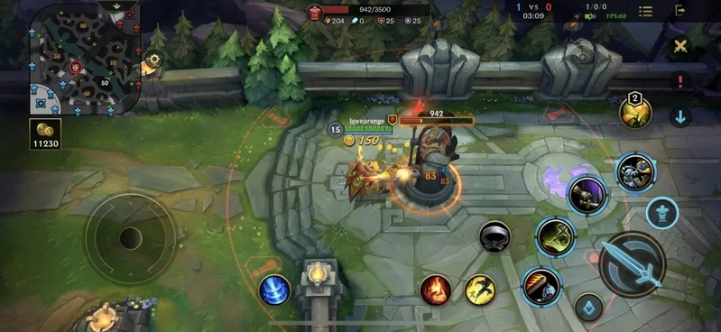
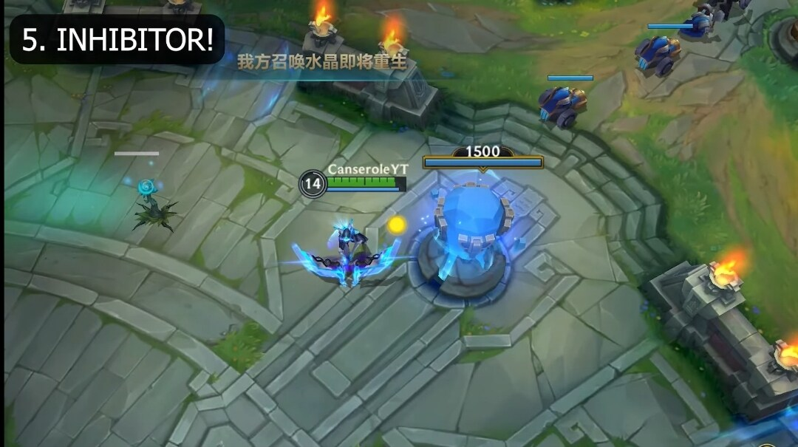
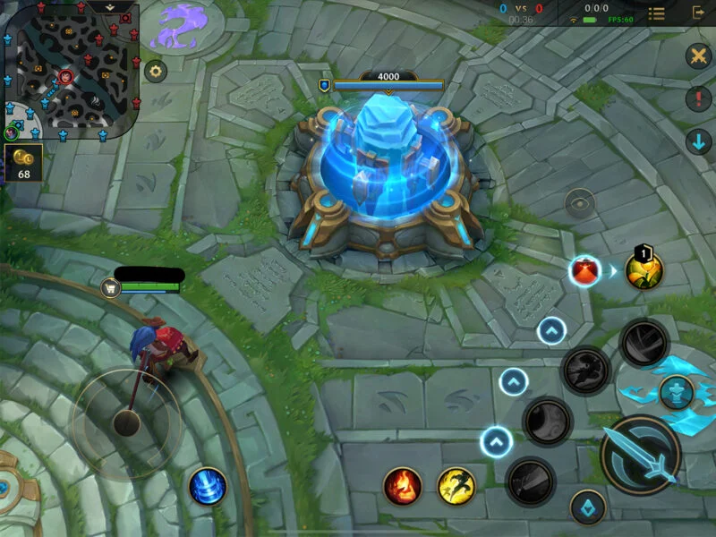

《英雄聯盟：激鬥峽谷》是一款在三維等距視角中的多人線上戰鬥競技場（MOBA）遊戲。 玩家透過平均每場20-25分鐘的遊戲中進行對決。 在每種遊戲模式下，隊伍都需要進行合作，通過摧毀每條線上的防禦塔，最後摧毀敵方基地的「水晶」從而獲得勝利。
多人線上戰鬥競技場遊戲（MOBA，multiplayer online battle arena）或稱作多人線上戰鬥擂台遊戲，又可定義為動作即時戰略遊戲（ARTS，action real-time strategy），源自 RTS 即時戰略遊戲，是 MMO 遊戲的子類別。從魔獸爭霸III玩家自定義地圖開始廣爲傳播。玩家通常會被分為兩隊，通常每個玩家只能控制其中一隊中的一名角色，以打垮對方隊伍的陣地建築為勝利條件。
防禦塔：每路兵線都有強大的防禦設施，稱為「防禦塔」。防禦塔會造成極高的傷害，並攻擊敵方小兵和接近的玩家。防禦塔會優先攻擊附近的敵方小兵，但如果敵方玩家攻擊我方玩家，則會立即攻擊敵方玩家。因此，通過將己方小兵推進進到防禦塔範圍內，召喚師可以在不被攻擊的情況下攻擊防禦塔。當摧毀防禦塔時，會提供金幣以及經驗。在比賽中被摧毀的防禦塔將被永久破壞，並且不會重生。
水晶防禦塔：摧毀水晶防禦塔會使我方水晶產生更加強大的超級小兵，並為周圍的小兵提供增強效果。水晶防禦塔將於5分鐘內重生，隨著遊戲時間加長，水晶防禦塔重生時間將會加快。水晶防禦塔重生之後，將無法對單位攻擊。但同時將會阻止對方水晶出動超級士兵。
水晶主堡：每個團隊都有一個水晶，只有在摧毀兵線上的所有防禦塔後才能攻擊水晶主堡。水晶主堡比防禦塔的傷害更高，造成傷害的速度更快，並將攻擊敵方小兵和接近小兵的玩家。當某一方團隊的水晶主堡被摧毀後，遊戲結束。
